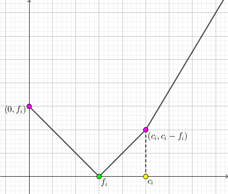
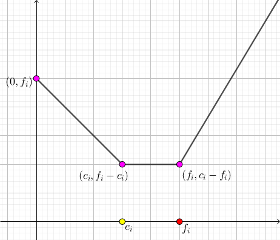

给定一个有源汇网络 $G$ 和在其上从 $1$ 到 $n$ 的流 $f$，这个流可能不是正确的 (即有可能流量不平衡，也有可能流量大于容量)。你现在可以花 $1$ 的代价将某条边 $e$ 的容量增大/减小 $1$ 个单位，也可以花 $1$ 的代价将边 $e$ 的流量增大/减小 $1$ 个单位。
假设所有边的流量和容量均为非负整数，求使 $f$ 变为正确的流所需花费的最小代价。
第一行包含两个非负整数 $n, m$ ($2 \leq n \leq 100; 0 \leq m \leq 100$)，表示网络的点数和边数，其中 $1$ 号点为源点，$n$ 号点为汇点。
接下来 $n$ 行，每行四个非负整数 $u_i, v_i, c_i, f_i$ ($1 \leq u_i, v_i \leq n; u_i \neq v_i; 0 \leq c_i, f_i \leq 10^6$)，描述 $G$ 中的一条从 $u_i$ 到 $v_i$ 的有向边，当前容量为 $c_i$，流量为 $f_i$。
输出一行一个整数，表示欲使 $f$ 变为正确的流所需花费的最小代价。
我们尝试使用网络流的算法来解决这个问题。由于每条边上已经有一定的 "预流"，因此为保证最终的流的流量平衡，在 "新的网络" 中也不一定是平衡的。于是可以使用类似无源汇有解可行流的方法，创建一个超级源点 $S$ 和超级汇点 $T$，然后对于流量不平衡的点 $v$，连接一条从 $S$ 到 $v$，容量为 $d^- \left( v \right) - d^+ \left( v \right)$ 的边 (如果 $d^- \left( v \right) > d^+ \left( v \right)$)，或者连接一条从 $v$ 到 $T$，容量为 $d^+ \left( v \right) - d^- \left( v \right)$ 的边 (如果 $d^- \left( v \right) < d^+ \left( v \right)$)。
于是，在新的网络中，一个保证所有与源汇连接的边均满流的流，加上原来每条边上的 "预流"，就能形成一个平衡的流。
而且，最小化代价的方法恰恰就是对原图的流进行修改 —— 这启发我们对这些新的流设定 "费用"，从而转化为一个最小费用最大流的问题。
接下来我们来讨论一下细节相关。
对于一条边，我们将其分为两大类：$f_i \leq c_i$ 或 $f_i \geq c_i$。
注意到，单纯的改容量是没有意义的，改容量是为了使流量不超过容量而服务的，因此我们只要规定了流量改成了多少，自然就能算出容量需要改成多少了。
于是代价可以看成自变量为 (最终) 流量 $f_{\rm final}$ 的函数 $F \left( f_{\rm final} \right)$。
$f_i \leq c_i$。
此时，$F \left( x \right)$ 的表达式如下：$$ F \left( x \right) = \begin{cases} f_i - x & 0 \leq x < f_i \\ x - f_i & f_i \leq x < c_i \\ 2 x - c_i - f_i & c_i \leq x \end{cases} $$ 图像如下图：
(ps: 最后一段斜率为 $2$ 是因为流量和容量需要同时增大)
$f_i > c_i$。
此时，$F \left( x \right)$ 的表达式如下：$$ F \left( x \right) = \begin{cases} f_i - x & 0 \leq x < c_i \\ f_i - c_i & c_i \leq x < f_i \\ 2 x - c_i - f_i & f_i \leq x \end{cases} $$ 图像如下图：
不难发现，在两种情况下，$F \left( x \right)$ 都是一个 (分段线性) 凸函数！
而对于这种分段线性凸函数，可以考虑二次函数的思想，使用带重边的费用流：先对答案加上函数的最小值，然后对于每一段，加入一条费用为该线段斜率，容量为 <该线段在 $x$ 轴上的投影> 的边。
当然，由于 $1, n$ 两点 (源汇) 不需要满足流量平衡条件，因此还要加一条容量为 $+ \infty$，费用为 $0$ 的边，以平衡流量。
最后，对新的网络跑一遍最小费用最大流，则 (在满足最大流的条件下)，最小的费用就是我们修正原流 $f$ 所需的最小代价。
时间复杂度就是跑最小费用最大流的复杂度。
#include <bits/stdc++.h>
const int N = 10000, M = 100000, INF = 0x7f7f7f7f;
inline int min(const int x, const int y) {return x < y ? x : y;}
namespace CF {
#define ad(x) ((x - 1 ^ 1) + 1)
struct edge {
int u, v, c, f;
edge (int u0 = 0, int v0 = 0, int c0 = 0, int f0 = 0): u(u0), v(v0), c(c0), f(f0) {}
} e[M];
int V, E, si = 1, ti = 2, flow, cost;
int first[N], next[M];
int dep[N], cur[N], que[M << 1];
char in_que[N], used[N];
inline void addedge(int u, int v, int c, int f) {
e[++E] = edge(u, v, c, f), next[E] = first[u], first[u] = E;
e[++E] = edge(v, u, -c), next[E] = first[v], first[v] = E;
}
bool bfs() {
int h = M, t = h + 1, i, x, y;
memset(dep, 127, sizeof dep);
que[h] = ti; dep[ti] = 0; in_que[ti] = 1;
for (; h < t; ) {
x = que[h++]; in_que[x] = 0;
for (i = first[x]; i; i = next[i])
if (dep[y = e[i].v] > dep[x] - e[i].c && e[ad(i)].f) {
dep[y] = dep[x] - e[i].c;
if (!in_que[y])
in_que[y] = 1,
(dep[y] >= dep[que[h]] ? que[t++] : que[--h]) = y;
}
}
return dep[si] < INF;
}
int dfs(int x, int lim) {
int a, c, f = 0;
if (x == ti || !lim) return lim;
used[x] = 1;
for (int &i = cur[x]; i; i = next[i])
if (dep[e[i].v] == dep[x] - e[i].c && e[i].f && !used[e[i].v]){
a = min(lim - f, e[i].f);
c = dfs(e[i].v, a);
e[i].f -= c; e[ad(i)].f += c;
if ((f += c) == lim) return f;
}
return f;
}
void Dinic() {
int f;
for (cost = flow = 0; bfs(); ) {
memcpy(cur, first, sizeof cur);
memset(used, 0, sizeof used);
flow += f = dfs(si, INF);
cost += dep[si] * f;
}
}
}
int n, m;
int D[N];
int main() {
int i, u, v, c, f, ans = 0;
scanf("%d%d", &n, &m);
for (i = 0; i < m; ++i) {
scanf("%d%d%d%d", &u, &v, &c, &f), D[u] -= f, D[v] += f;
u += 2, v += 2, CF::addedge(u, v, 2, INF);
if (f <= c) CF::addedge(v, u, 1, f), CF::addedge(u, v, 1, c - f);
else CF::addedge(v, u, 0, f - c), CF::addedge(v, u, 1, c), ans += f - c;
}
for (i = 1; i <= n; ++i)
if (D[i] > 0) CF::addedge(1, i + 2, 0, D[i]);
else if (D[i] < 0) CF::addedge(i + 2, 2, 0, -D[i]);
CF::addedge(n + 2, 3, 0, INF), CF::V = n + 2, CF::Dinic();
printf("%d\n", ans + CF::cost);
return 0;
}
坑1：建图时原图的源、汇点和新图的源、汇点不要搞混了。
坑2：费用流的 SPFA 中由于一个元素可能进队多次，因此队列需要开大点。